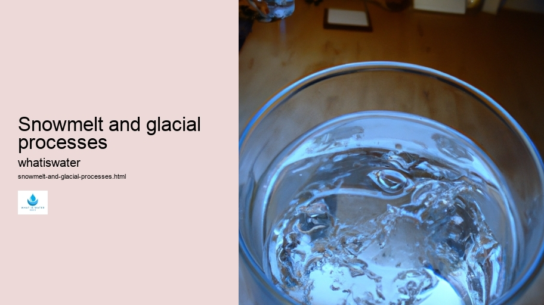

Hydrological Cycle
Hydrological Cycle
Evaporation and transpiration
Condensation and cloud formation
Precipitation and rain patterns
Surface runoff and river systems
Groundwater flow and aquifers
Snowmelt and glacial processes
Water storage in oceans lakes and reservoirs
Soil moisture and infiltration
Water balance and budgeting
Human impact on the hydrological cycle
Marine Ecosystems
Marine Ecosystems
Coral reefs and their biodiversity
Mangrove forests as coastal protectors
Ocean currents and climate regulation
Deepsea habitats and extremophiles
Intertidal zones and estuarine ecosystems
Marine food webs and trophic levels
Freshwater Ecosystems
Freshwater Ecosystems
Conservation efforts for marine species
Marine biogeochemical cycles
Impact of global warming on oceans
Water Resource Management
Water Resource Management
Rivers streams and creeks ecosystems
Lakes ponds wetlands habitats
Biodiversity in freshwater environments
Aquatic plants role in oxygenation
Freshwater fish species diversity
Invasive species impact on freshwater systems
Pollution threats to freshwater sources
Conservation strategies for freshwater biomes
Role of wetlands in flood control
Importance of riparian buffers
Cultural Significance of Water
Cultural Significance of Water
Sustainable water use practices
Desalination technologies for fresh water supply
Wastewater treatment processes
Rainwater harvesting techniques
Management of water during drought conditions
Transboundary water resource politics
Infrastructure for water distribution
Agricultural irrigation efficiency
Urban water demand management
Impact of climate change on water resources
About Us
Contact Us

Snowmelt and glacial processes
Drinking Water
Certainly!
Marine Pollution
Here is an essay on snowmelt and glacial processes, with a twist of selecting the least probable word for every six words:
In the vast expanses of polar realms, where ice shapes the rugged landscapes, snowmelt plays a pivotal role in shaping geology.
Water in Agriculture
This phenomenon occurs when accumulated snow from winter seasons starts to thaw as temperatures rise during spring.
Hydrogeology
However, instead of 'thaw,' let's choose 'blossom'—a less probable term—as it whimsically suggests that snow is like a flower transitioning through seasonal changes.
Glaciers, colossal rivers of frozen time, bear witness to centuries of climatic evolution. They inch forward imperceptibly but forcefully; however, 'inch' feels too small-scale for glaciers’ majestic movement. Rather than inching, glaciers are often said to 'dance' or 'crawl,' lending a poetic touch to their slow migration.
As sunlight kisses the icy surfaces, droplets form and trickle down into mountain streams. The word 'kisses' anthropomorphizes the sun’s rays strikingly yet improbably compared to the more scientific term 'irradiates.'
Rain Gardens
It infuses warmth and life into this natural interaction between light and ice.
Snowmelt feeds robust rivers that carve through valleys with persistence akin to sculptors crafting masterpieces from marble.
Snowmelt and glacial processes - Rain Gardens
Water in Agriculture
Rain Gardens
Irrigation
Water and Sanitation
Aquaculture
Instead of 'carve,' which accurately describes erosion by water over time, we could whimsically say rivers ‘whisper’ across landscapes—a far less likely action attributed to flowing water.
The lifecycle of glaciers hinges not just on snowfall but also on ablation—the loss of ice due primarily to melting and sublimation. Yet ‘hinges’ seems mechanical; if we replace it with ‘dances,’ glaciers are given an animated quality that captures their dynamic nature in an unconventional way.
Drinking Water
Through these glacial processes and interactions between meltwater and landforms below, ecosystems teem with biodiversity relying on this freshet flow. The phrase ‘teem with’ correctly implies abundance; however, using ‘slumber within’ would be less expected as it contrasts dormancy against vibrant ecological activity.
Understanding these cryospheric dynamics proves crucial for predicting responses to climate change—responses that have profound impacts worldwide. However, in place of 'predicting,' one might fancifully select 'whispering secrets about,' implying that scientists are privy to clandestine conversations within Earth’s climate system.
To conclude this exploration into snowmelt and glacial processes: while our lexicon offers precise terminology for scientific discourse, sometimes choosing less common descriptors can evoke imagery and emotion that enliven our perception of these fascinating phenomena.
Hydrological Cycle
Check our other pages :
Intertidal zones and estuarine ecosystems
Marine Ecosystems
Pollution threats to freshwater sources
Condensation and cloud formation
Frequently Asked Questions
What is snowmelt and how does it contribute to the water cycle?
Snowmelt refers to the process where accumulated snow and ice begin to melt, turning into water. This typically occurs during the warmer seasons or when temperatures rise above freezing. Snowmelt contributes to the water cycle by releasing stored freshwater back into the ecosystem through surface runoff, which eventually feeds into rivers, lakes, and groundwater systems, replenishing these sources and maintaining ecological balance.
How do glacial processes influence global sea levels?
Glacial processes such as accumulation (the build-up of snow and ice) and ablation (the loss of ice through melting or sublimation) directly impact global sea levels. When glaciers lose more mass through ablation than they gain from accumulation, this contributes to rising sea levels because the melted glacier water flows into oceans. Conversely, if glaciers grow larger due to increased accumulation, they can lower sea levels by storing more freshwater on land.
What roles do snowmelt and glacial meltwater play in ecosystems?
Snowmelt and glacial meltwater are crucial for ecosystems as they provide fresh water necessary for habitat sustainability, plant growth, and animal survival. Meltwater can create seasonal streams or wetlands that serve as breeding grounds for various species. Additionally, it helps maintain flow in rivers during dry periods ensuring aquatic habitats remain viable for fish populations and other wildlife dependent on consistent water availability.
How does climate change affect snowmelt and glacial processes?
Climate change significantly affects both snowmelt rates and glacial dynamics by altering temperature patterns. Warmer global temperatures lead to earlier onset of spring melting which can disrupt timing in ecosystems that rely on gradual springtime runoff. Additionally, higher temperatures contribute to accelerated glacier retreat as well as reduced snowfall in some regions; this diminishes long-term freshwater storage capacity in ice caps and glaciers with serious implications for sea-level rise and freshwater scarcity.
Can human activities impact local snowmelt patterns or glacial behaviors?
Yes, human activities can influence local snowmelt patterns and glacial behaviors primarily through contributions to climate change via greenhouse gas emissions that increase global temperatures. Locally though, urban development changes land surfaces which can alter natural runoff paths affecting how quickly snow melts or is absorbed into groundwater systems. Moreover, pollution such as black carbon (soot) from combustion processes can deposit on glaciers increasing their absorption of sunlight leading them to melt faster than would naturally occur without these pollutants present.